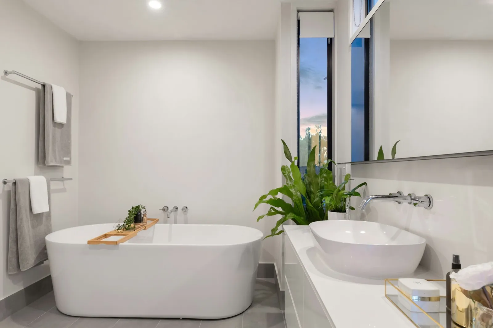
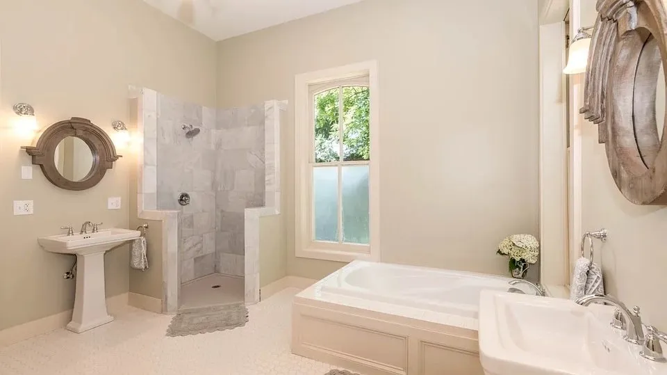
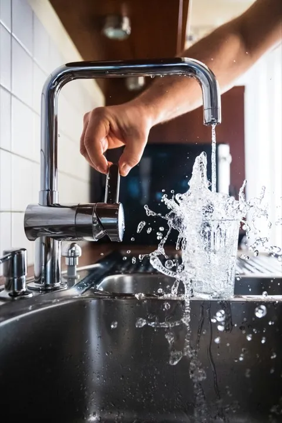
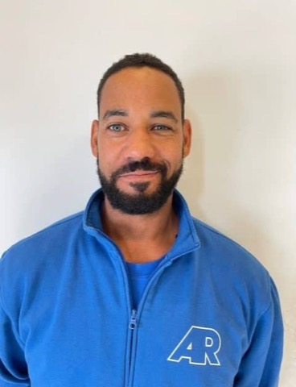
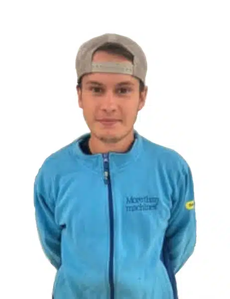

Google-omdöme”Trevliga och tålmodiga, bra service”

VVS som
håller.
Din lokala rörmokare i Strängnäs. Badrum, värme och VVS med omsorg om ditt hem – från första samtalet till sista kopplingen.
Kundernas ord. Vår stolthet.Utvalda femstjärniga Google-omdömen
Det ska fungera.
Och kännas rätt.
Ett varmt hem. En dusch att längta till. Vatten där det ska vara.
Vi hjälper privatpersoner, företag och bostadsrättsföreningar med det som får vardagen att flyta. Med kunskap, personlig service och en lokal förankring i Strängnäs.
Lär känna AnderssonsVad drömmer
ditt hem om?
Från en bättre morgon till en varmare vinter.
Vi hjälper dig med helheten.

BadrumsrenoveringDin nya
Utforska badrum
Din nya
favoritplats.
Utforska badrum VärmepumparSkönare hemma.
Skönare hemma.
Året runt.
En värmelösning efter ditt hus och dina behov.
Hitta rätt värmeRörinstallationer
Vattenledningar och avlopp
Avloppsrensning
Stopp i avlopp
Stamspolning
Stamspolning för fastigheter
Varmvattenberedare
Byte av varmvattenberedare
Avloppsanläggning
Genomgång av fastighetens behov
Fem stjärnor.
Med kundernas ord.
Utvalda 5-stjärniga Google-omdömen.
Google-omdöme”Suverän service och samarbete när jag hade stopp i avloppet mitt i semestern!”
Google-omdöme
Läs alla kundomdömen
Omdömen återgivna från Google via vår befintliga webbplats.
Urvalet visar inte företagets samlade snittbetyg.

Rör det rör,
rör det Anderssons.
Vi finns nära när du behöver oss. Med bas i Strängnäs hjälper vi kunder i Mariefred, Åkers Styckebruk och Stallarholmen med omnejd.
SträngnäsMariefredÅkers StyckebrukStallarholmen
Vi hjälper dig vidareEn bra känsla.
Från början till klart.
Vi lyssnar.
Du berättar vad du vill göra. Vi ställer frågorna som behövs för att förstå ditt hem och dina önskemål.
Vi planerar.
Vi går igenom omfattning och material, tar fram ett prisförslag och kommer överens om nästa steg.
Vi tar hand om det.
Erfarna rörmokare utför arbetet med omsorg om installationerna och platsen där du bor.
Riktiga människor.
Riktigt nära.
Bra hjälp börjar med någon som lyssnar.
Välkommen till vår butik på Annebergsvägen 1. Här hittar du blandare, WC och rördelar – och hjälp att välja rätt. Ta gärna med en bild på det du behöver.
Kom förbi.Annebergsvägen 1, Strängnäs
Vardagar 09–16
Hitta till ossVardagar 09–16

Det gör skillnad.

VS-lärling
En partner för
hela fastigheten.
Service, installationer och stamspolning för företag, fastighetsägare och bostadsrättsföreningar.
För företag & BRFVar arbetar ni?
Vi utgår från Strängnäs och arbetar även i Mariefred, Åkers Styckebruk och Stallarholmen med omnejd.
Vad kostar det att anlita er?
Priset beror på omfattningen och materialet. Berätta vad du behöver hjälp med så går vi igenom förutsättningarna och tar fram ett prisförslag.
Kan jag besöka er butik?
Ja. Vi finns på Annebergsvägen 1 i Strängnäs, vardagar 09–16. Ta gärna med en bild om du letar efter en särskild del.
Är ni auktoriserade enligt Säker Vatten?
Ja. Anderssons Rörservice är ett auktoriserat VVS-företag enligt Branschregler Säker Vatteninstallation.